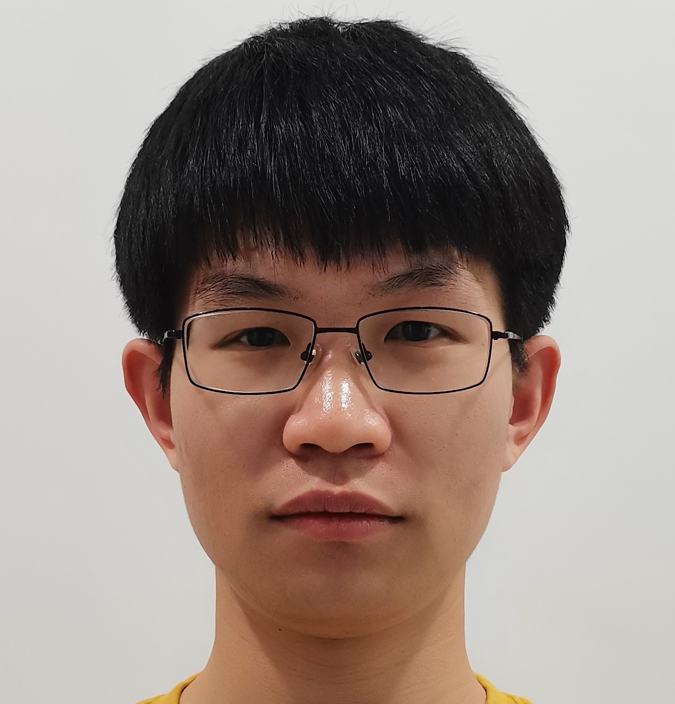
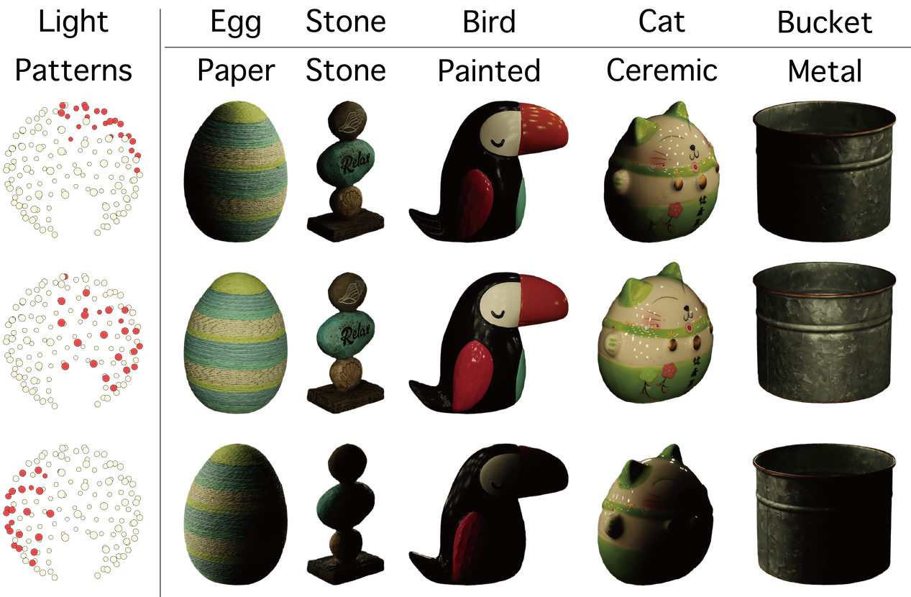
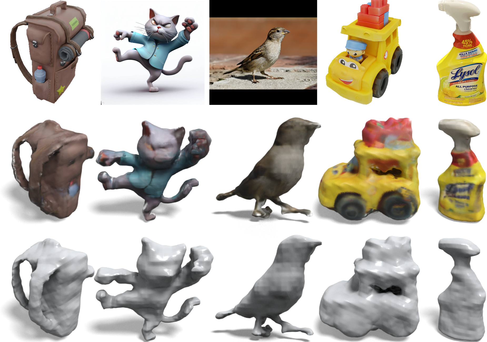
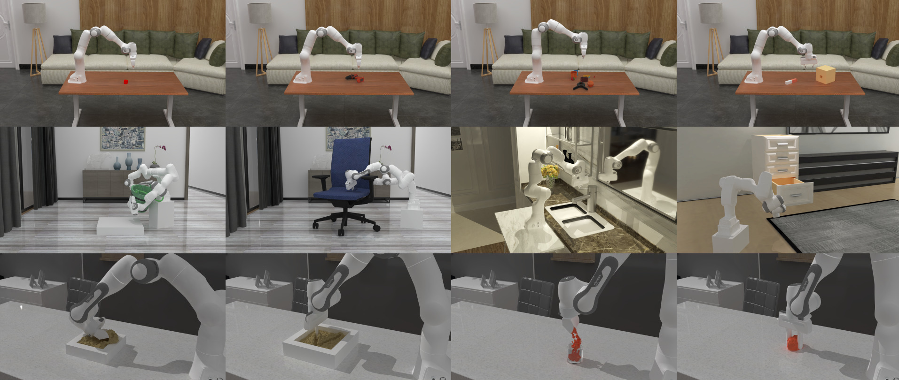

About Me
I am currently a Ph.D. student in the College of Computer Science & the State Key Laboratory of CAD&CG at Zhejiang University, supervised by Prof. Xiaowei Zhou, and a visiting Ph.D. student in Computer Science and Engineering at SU Lab at UC San Diego, supervised by Prof. Hao Su.
I received my Bachelor's degree in 2019 in Computer Science and English (dual-degree) from Zhejiang University.
I am interested on 3D Computer Vision and Deep Learning. My research focuses on 3D scene understanding, including 3D object detection and tracking and 3D reconstruction.
Interests
- Computer Vision
- Deep Learning
- Vision + Graphics
- Vision + AR/Robotics
Education
- Ph.D. in Computer ScienceZhejiang University, 2019-Now
- Bachelor in Computer Science and EnglishZhejiang University, 2015-2019
Publications
show selectedshow all by dateshow all by topic
* denotes equal contribution.



CVPR2021 Oral Presentation and Best Paper Candidate


Awards
- First-class Scholarship of ZJU, 2017
- Postgraduate Scholarship of ZJU, 2019
- Luk's Scholarship for Graduates International Exchange, 2022
- The Most Academic Value Award of Zhejiang University Doctoral Conference Forum, 2021
- Excellent and Miyoshi Postgraduate, 2020
- Excellent graduation thesis, 2019
- Full marks in PAT Level-A, 2018
- Second-class Scholarship of Zhejiang University, 2016, 2018
- The Third Prize of the National College Student Mathematics Competition, 2016
- Mathematics Modeling S Prize, 2016